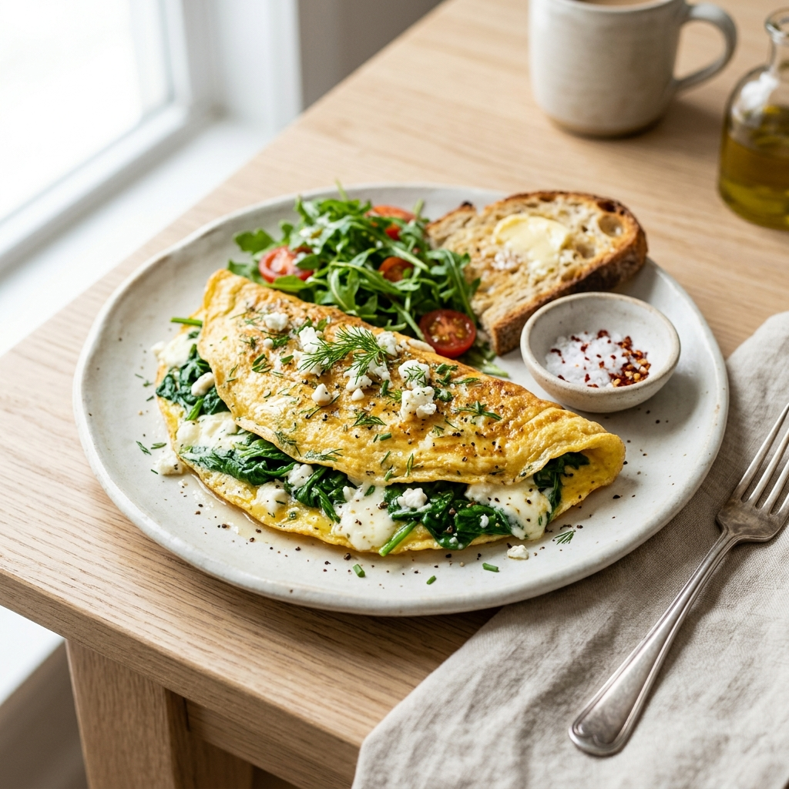
Intelligent Fueling · Pilonul 3
CARTEA DE
REȚETE
Ciprian · 7 zile · 2500 / 2700 / 2900 kcal · mâncare reală
CUM
FOLOSEȘTI
Ai aici 7 zile complete, gata calculate pe porția ta. Nu treci nimic în nicio aplicație și nu cântărești la gram — porțiile sunt scrise.
Alegi ziua după cât de activ ai fost, gătești, mănânci. Proteina mare e firul roșu: 240 g pe zi, ca să construiești, nu doar să întreții.
Normal / zi2700
Proteină240g
Carbohidrați230g
Grăsimi90g
Zi ușoară2500Zi sedentară, fără efort fizic.
Zi normală2700Activitate obișnuită, fără sală.
Zi de antrenament2900+ carbohidrați pentru efort.
REGULILE CĂRȚII
1Proteina rămâne fixă în orice zi. Ce se schimbă între zile sunt carbohidrații: mai mulți în zilele active, mai puțini în cele sedentare. Ajustezi orezul, cartofii și mămăliga, nu carnea.
2Mesele se schimbă între zile de același tip. Orice mic dejun merge cu orice prânz — toate sunt construite pe aceleași valori. Combini liber, ziua tot la țintă iese.
3Proteină la fiecare masă. ~60 g de fiecare dată. Asta ține foamea departe și alimentează constant recuperarea.
4Gătești o dată, mănânci de mai multe ori. Puiul, orezul, mămăliga — le faci în porții mari și ai pachetul gata. Carnea rece din prânz devine gustarea de mâine.
5În ziua de antrenament, adaugă o porție de carbohidrați la masa de după sală. Refaci energia consumată — e combustibil, nu un plus de care să te ferești.
DE REȚINUT
Porțiile sunt pentru construcție și forță, nu pentru deficit. Dacă o zi iese mai mare sau mai mică, te întorci la masa următoare, nu „de luni".
80% structură, 20% plăcere. Asta o duci toată viața.
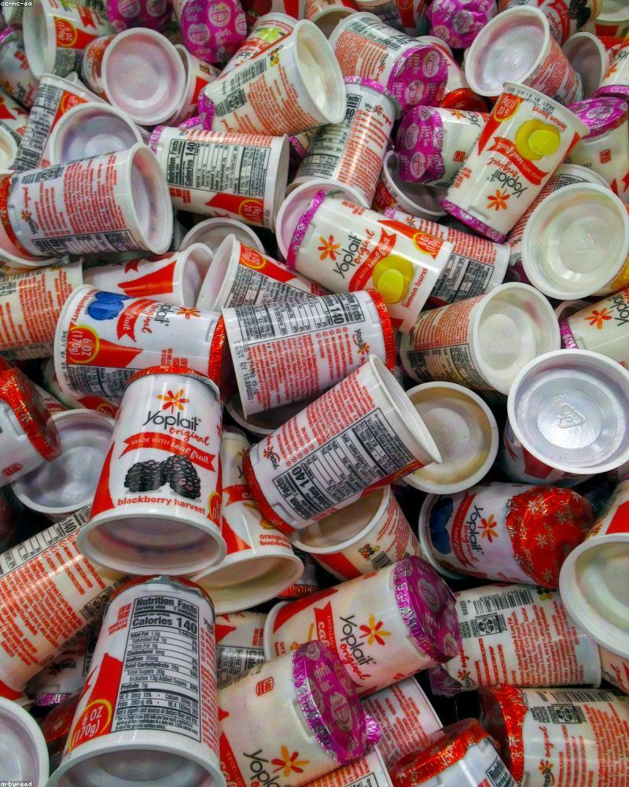
Z1 · MIC DEJUN
OMLETĂ DIN 4 OUĂ
CU IAURT ȘI PÂINE
Intelligent FuelingDimineața⏱ 10 min
Calorii720
Proteine55G
Carbohidrați55G
Grăsimi28G
Ingrediente
Ouă întregi4 buc
Iaurt grecesc 2%200 g
Pâine integrală2 felii
Telemea slabă40 g
Roșii și ardei150 g
Execuție
01Bate ouăle, toarnă-le în tigaia caldă cu un strop de ulei. Presară telemeaua.
02Lasă să se lege la foc mic, pliază omleta.
03Servește cu iaurtul grecesc, pâinea integrală și legumele proaspete.
PONTIaurtul grecesc adaugă ~18 g proteină aproape fără efort. E baza ta de dimineață în orice variantă.
PUI LA GRĂTAR
CU CARTOFI ȘI SALATĂ
Base StrengthPrânz⏱ 30 min
Calorii900
Proteine75G
Carbohidrați85G
Grăsimi26G
Ingrediente
Piept de pui280 g
Cartofi350 g
Salată mixtă150 g
Ulei de măsline1 lingură
Condimente, saredupă gust
Execuție
01Condimentează puiul și pune-l pe grătar sau tigaie-grill, câteva minute pe fiecare parte.
02Cartofii tăiați se coc la 200°C, 25-30 minute, sau în air fryer.
03Salată cu o lingură de ulei și lămâie. Masa ta mare de după sală.
PONTFă 2-3 porții de pui odată. Ce rămâne devine micul dejun „pui rece cu ouă" sau gustarea de mâine.
TREI OUĂ FIERTE
CU TELEMEA SLABĂ
Intelligent FuelingGustare⏱ 2 min
Calorii350
Proteine32G
Carbohidrați8G
Grăsimi20G
Ingrediente
Ouă fierte3 buc
Telemea slabă100 g
Roșii / castravete150 g
Execuție
01Fierbe ouăle din timp și ține-le la frigider. Le ai gata oricând.
02Le combini cu telemeaua și legumele. Gustare proteică, fără gătit.
PONTFierbe o tură de ouă duminică. Gustarea proteică e rezolvată pentru jumătate de săptămână.
MĂMĂLIGĂ CU BRÂNZĂ
DE VACI ȘI OUĂ
Intelligent FuelingSeara⏱ 20 min
Calorii700
Proteine50G
Carbohidrați60G
Grăsimi22G
Ingrediente
Mămăligă caldă250 g
Brânză de vaci slabă250 g
Ouă3 buc
Sare, mărardupă gust
Execuție
01Fierbe mămăliga și fă ochiuri sau ouă fierte alături.
02Servește mămăliga cu brânza de vaci și ouăle. Mâncare de acasă, sățioasă.
PONTMămăliga e carbohidratul tău de seară în zi de antrenament. Zi ușoară: înjumătățește porția și pune mai multă brânză.
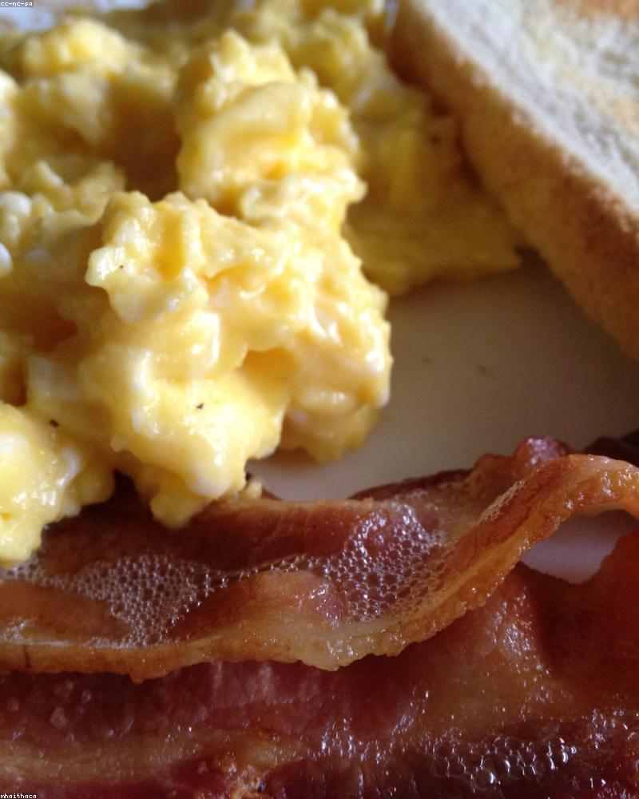
Z2 · MIC DEJUN
OUĂ FIERTE CU
CARTOFI ȘI TELEMEA
Intelligent FuelingDimineața⏱ 12 min
Calorii700
Proteine48G
Carbohidrați60G
Grăsimi26G
Ingrediente
Ouă fierte4 buc
Cartofi fierți250 g
Telemea slabă60 g
Roșii150 g
Execuție
01Fierbe ouăle și cartofii (poți de seara). Dimineața doar le asamblezi.
02Taie totul, adaugă telemeaua și roșiile. Mic dejun rapid și consistent.
PONTCartofii fierți de seara reci au mai mult „amidon rezistent" — mai blânzi cu glicemia și la fel de sățioși.
SOMON LA AIR FRYER
CU OREZ ȘI LEGUME
Unbreakable CapacityPrânz⏱ 25 min
Calorii880
Proteine62G
Carbohidrați80G
Grăsimi32G
Ingrediente
File de somon250 g
Orez fiert250 g
Legume (broccoli, morcov)200 g
Lămâie, sare, piperdupă gust
Execuție
01Pune somonul în air fryer cu lămâie și sare, 180°C, 12-14 minute.
02Fierbe orezul și legumele la abur în paralel.
03Somonul îți dă și omega-3, nu doar proteină. Masa completă de după sală.
PONTSomonul acoperă și nevoia de grăsimi bune (omega-3). Două porții pe săptămână și ești acoperit.
IAURT GRECESC
CU PUDRĂ PROTEICĂ
Intelligent FuelingGustare⏱ 2 min
Calorii370
Proteine48G
Carbohidrați22G
Grăsimi9G
Ingrediente
Iaurt grecesc 2%250 g
Pudră proteică1 porție
Fruct (opțional)1 buc
Execuție
01Amestecă pudra în iaurt până se face o cremă densă.
02Aproape 50 g proteină într-o gustare de 2 minute. Cea mai eficientă masă a zilei.
PONTAsta e gustarea ta „de urgență" când n-ai timp de gătit. Mereu ai iaurt și pudră în casă.
PUI LA CUPTOR
CU CARTOFI ȘI SALATĂ
Base StrengthSeara⏱ 30 min
Calorii650
Proteine55G
Carbohidrați50G
Grăsimi20G
Ingrediente
Piept de pui230 g
Cartofi200 g
Salată mixtă150 g
Ulei, condimentedupă gust
Execuție
01Pui și cartofi condimentați, la cuptor 200°C, 25-30 minute.
02Salată proaspătă alături. Simplu, sățios, ușor de făcut în porții mari.
PONTBagă o tavă plină de pui. Ai proteina gata pentru 2-3 zile — cina, micul dejun și gustarea de mâine.
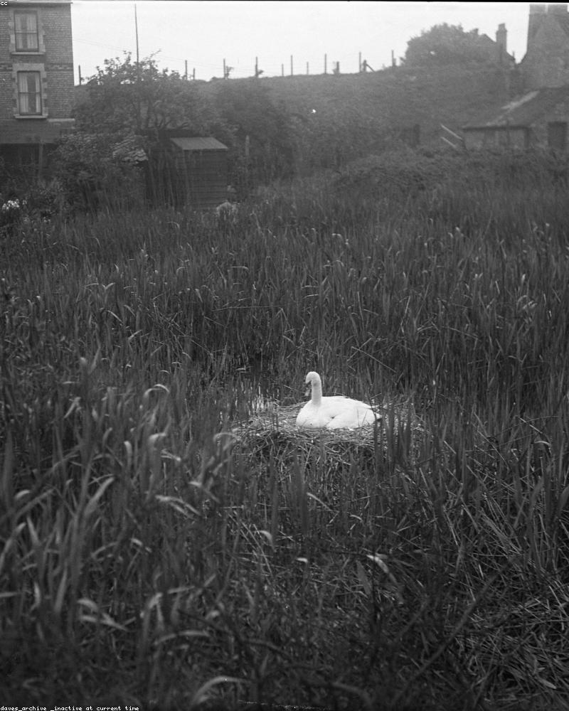
Z3 · MIC DEJUN
PUI RECE CU DOUĂ
OUĂ ȘI PÂINE
Intelligent FuelingDimineața⏱ 5 min
Calorii680
Proteine58G
Carbohidrați45G
Grăsimi24G
Ingrediente
Pui rece (din cina de ieri)180 g
Ouă fierte2 buc
Pâine integrală2 felii
Roșii1 mare
Execuție
01Folosește puiul gătit deja. Taie-l, adaugă ouăle fierte și roșia.
02Mic dejun de 5 minute, peste 55 g proteină. Așa transformi resturile în masă.
PONTĂsta e motivul pentru care gătești pui în plus seara: micul dejun de mâine e deja făcut.
COTLET DE PORC SLAB
CU MĂMĂLIGĂ
Base StrengthPrânz⏱ 25 min
Calorii900
Proteine68G
Carbohidrați80G
Grăsimi30G
Ingrediente
Cotlet de porc slab250 g
Mămăligă300 g
Murături sau salată150 g
Sare, piper, usturoidupă gust
Execuție
01Condimentează cotletul și gătește-l la grătar sau tigaie, câteva minute pe parte.
02Fierbe mămăliga și servește cu salată sau murături.
03Alege cotletul slab (fără șorici gros). Mâncare românească, în porția corectă.
PONTPorcul slab e o sursă bună de proteină. Alegerea bucății contează mai mult decât „porc da/nu".
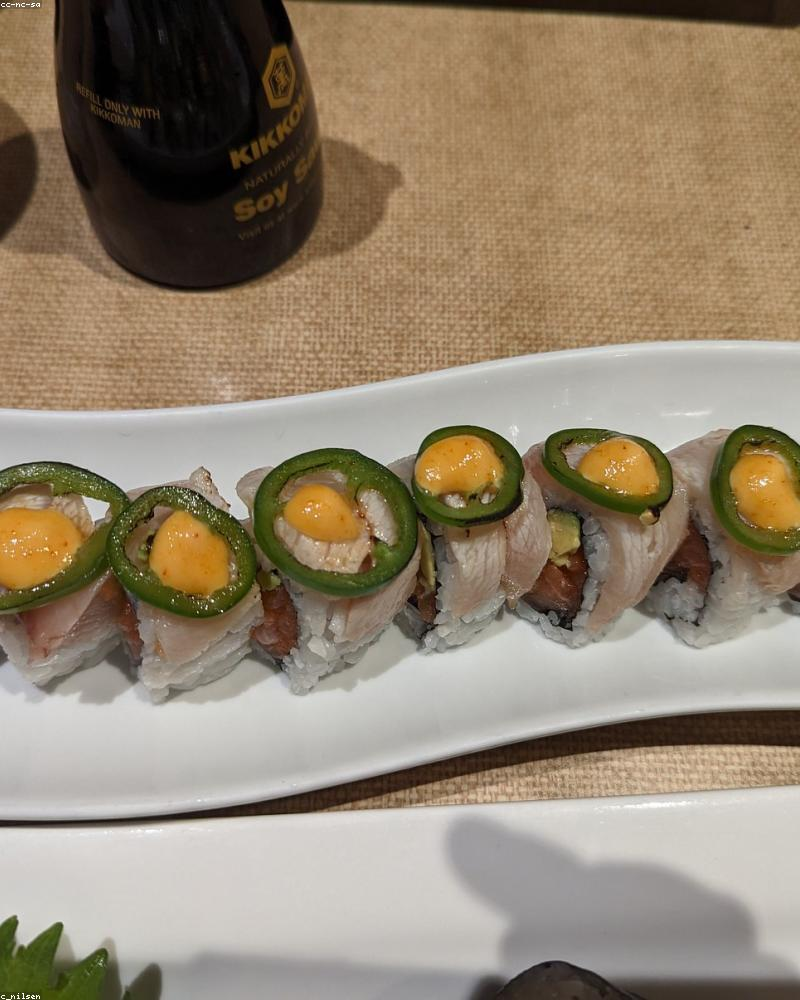
Z3 · GUSTARE
TON CU PERLE
DE COTTAGE
Intelligent FuelingGustare⏱ 3 min
Calorii320
Proteine45G
Carbohidrați8G
Grăsimi10G
Ingrediente
Ton în suc propriu130 g net
Perle de cottage100 g
Roșii / castravete100 g
Execuție
01Scurge tonul și amestecă-l cu cottage și legumele tăiate.
0245 g proteină slabă, fără gătit. Gustare densă proteic, ușoară pe stomac.
PONTConserva de ton e prietena ta când ești pe drum. Proteină multă, zero gătit, ușor de cărat.
SOMON CU LEGUME
LA ABUR ȘI OREZ
Unbreakable CapacitySeara⏱ 22 min
Calorii600
Proteine45G
Carbohidrați45G
Grăsimi24G
Ingrediente
File de somon180 g
Orez fiert150 g
Legume la abur200 g
Lămâie, saredupă gust
Execuție
01Gătește somonul la tigaie sau cuptor cu lămâie.
02Legume la abur și orez alături. Cină completă, cu grăsimi bune.
PONTZi ușoară: scoate orezul și mărește legumele. Aceeași proteină, mai puțini carbohidrați.
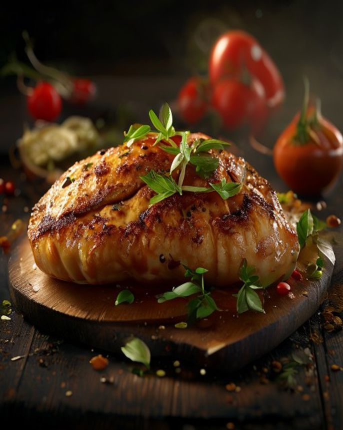
Z4 · MIC DEJUN
IAURT GRECESC MARE
CU PUDRĂ ȘI OVĂZ
Intelligent FuelingDimineața⏱ 4 min
Calorii600
Proteine60G
Carbohidrați55G
Grăsimi14G
Ingrediente
Iaurt grecesc 2%400 g
Pudră proteică1 porție
Fulgi de ovăz40 g
Fruct1 buc
Execuție
01Amestecă iaurtul cu pudra și ovăzul. Lasă 2 minute să se înmoaie.
02Adaugă fructul tăiat. Micul dejun cu 60 g proteină, fără gătit.
PONTPregătește-l de seara („overnight") și dimineața doar îl scoți din frigider. Zero efort.

Z4 · PRÂNZ
CINCI OUĂ CU PUI
ȘI CARTOFI LA TIGAIE
Base StrengthPrânz⏱ 15 min
Calorii820
Proteine68G
Carbohidrați55G
Grăsimi36G
Ingrediente
Ouă5 buc
Pui sau porc slab120 g
Cartofi200 g
Ardei, ceapă100 g
Execuție
01Călește cartofii tăiați cubulețe cu carnea într-o tigaie mare.
02Sparge ouăle peste, amestecă până se leagă. O tigaie rapidă, completă.
PONTO singură tigaie, o singură spălare. Masă completă în 15 minute când n-ai chef de gătit.
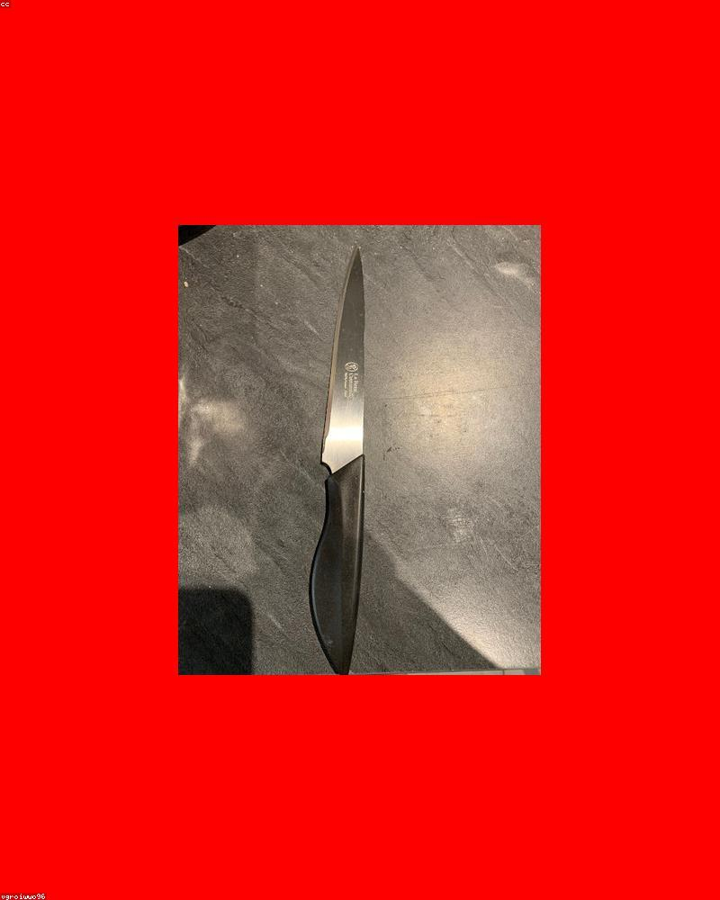
Z4 · GUSTARE
CARNE RECE
CU ROȘIE MARE
Intelligent FuelingGustare⏱ 2 min
Calorii300
Proteine42G
Carbohidrați8G
Grăsimi11G
Ingrediente
Carne rece (pui/porc din prânz)160 g
Roșie mare1 buc
Sare, piperdupă gust
Execuție
01Folosește carnea gătită deja. O tai, adaugi roșia mare.
02Cea mai simplă gustare: proteină pură din ce ai gătit deja.
PONT„Carnea rece din prânz" e un fir care leagă toată cartea. Gătești o dată, apare în 2-3 mese.
OUĂ CU TELEMEA
ȘI SALATĂ MARE
Intelligent FuelingSeara⏱ 10 min
Calorii580
Proteine42G
Carbohidrați25G
Grăsimi34G
Ingrediente
Ouă fierte4 buc
Telemea / cottage200 g
Salată mare (verde, roșii, castravete)250 g
Ulei de măsline1 lingură
Execuție
01Asamblează ouăle fierte, brânza și salata mare.
02O lingură de ulei deasupra. Cină ușoară și proteică, fără carbohidrați grei seara.
PONTÎn zi normală sau ușoară, seara mergi pe proteină și legume, fără mămăligă sau cartofi. Carbohidrații îi pui ziua, la efort.
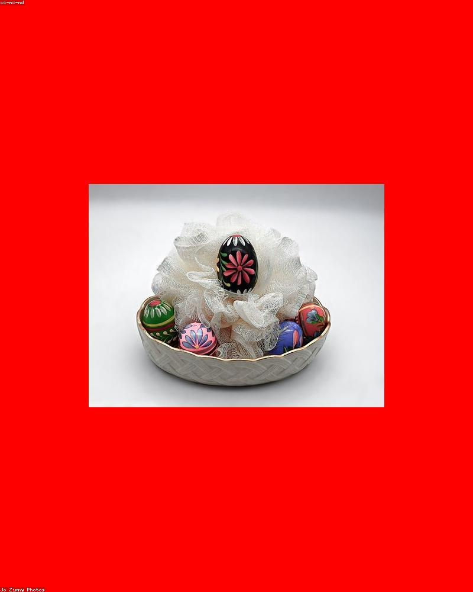
Z5 · MIC DEJUN
BRÂNZĂ DE VACI CU
OUĂ JUMĂRI ȘI PÂINE
Intelligent FuelingDimineața⏱ 8 min
Calorii650
Proteine55G
Carbohidrați45G
Grăsimi26G
Ingrediente
Brânză de vaci slabă200 g
Ouă3 buc
Pâine integrală2 felii
Roșii, ardei120 g
Execuție
01Fă ouă jumări la foc mic, cu un strop de ulei.
02Servește cu brânza de vaci, pâinea și legumele. Dublă sursă de proteină slabă.
PONTBrânza de vaci e proteină slabă, ieftină și sățioasă. O ai mereu în frigider ca bază.
CIORBĂ DE PUI CU
CARNE EXTRA ȘI BRÂNZĂ
Intelligent FuelingPrânz⏱ 35 min
Calorii820
Proteine70G
Carbohidrați60G
Grăsimi30G
Ingrediente
Piept de pui250 g
Legume de ciorbă250 g
Brânză de vaci (lângă)100 g
Pâine1 felie
Execuție
01Fierbe puiul (în plus față de o ciorbă normală) cu legumele, 30 de minute.
02Drege cu ce-ți place (borș, roșii). Servește cu brânza de vaci alături pentru proteină în plus.
PONTO ciorbă obișnuită are puțină proteină. Pune dublă carne și o ridici la nivelul tău de 240 g/zi.
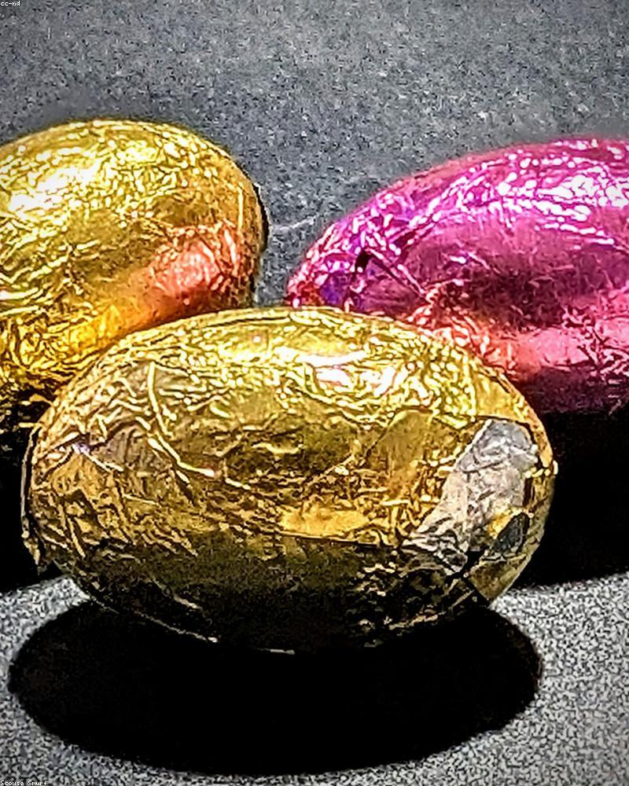
Z5 · GUSTARE
TREI OUĂ FIERTE
CU COTTAGE
Intelligent FuelingGustare⏱ 2 min
Calorii320
Proteine35G
Carbohidrați8G
Grăsimi16G
Ingrediente
Ouă fierte3 buc
Brânză cottage120 g
Castravete1 buc
Execuție
01Ouă fierte din timp plus o cupă de cottage. Gata în două minute.
02Combinația clasică de gustare proteică, ușoară și ieftină.
PONTRotește gustările între ele (ouă/cottage, ton, iaurt cu pudră) ca să nu te plictisești. Aceleași macros, gusturi diferite.
MUȘCHI DE PORC
LA CUPTOR CU LEGUME
Base StrengthSeara⏱ 35 min
Calorii580
Proteine52G
Carbohidrați20G
Grăsimi28G
Ingrediente
Mușchi de porc230 g
Legume la cuptor (dovlecel, ardei)250 g
Usturoi, rozmarin, saredupă gust
Ulei de măsline1 linguriță
Execuție
01Condimentează mușchiul, pune-l în tavă cu legumele tăiate.
02Coace la 200°C, 30 de minute. Lasă carnea să se odihnească 5 minute înainte de feliat.
PONTMușchiul de porc e una dintre cele mai slabe bucăți. Cină proteică, sățioasă, fără carbohidrați grei.
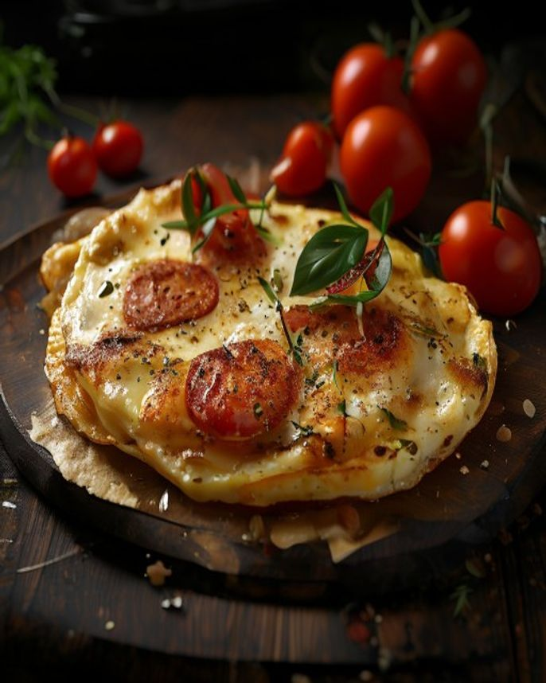
Z6 · MIC DEJUN
OMLETĂ CU TELEMEA
ȘI ROȘII
Intelligent FuelingDimineața⏱ 8 min
Calorii560
Proteine48G
Carbohidrați20G
Grăsimi34G
Ingrediente
Ouă întregi4 buc
Albuș extra2 buc
Telemea slabă60 g
Roșii, ardei150 g
Execuție
01Bate ouăle cu albușurile, toarnă-le peste legumele călite.
02Presară telemeaua, lasă să se lege. În zi ușoară, sari peste pâine.
PONTÎn zi ușoară, ții proteina sus și tai din carbohidrați. Omleta fără pâine e exact asta.
PUI LA GRĂTAR
CU SALATĂ MARE
Base StrengthPrânz⏱ 20 min
Calorii700
Proteine75G
Carbohidrați35G
Grăsimi28G
Ingrediente
Piept de pui300 g
Salată mare mixtă250 g
Pâine integrală1 felie
Ulei de măsline, lămâie1 lingură
Execuție
01Grătar din pui, condimentat după gust.
02Salată mare alături, o singură felie de pâine. Multă proteină, carbohidrați reduși.
PONTÎn zi ușoară, volumul vine din salată, nu din cartofi. Te saturi la fel, cu mai puține calorii.
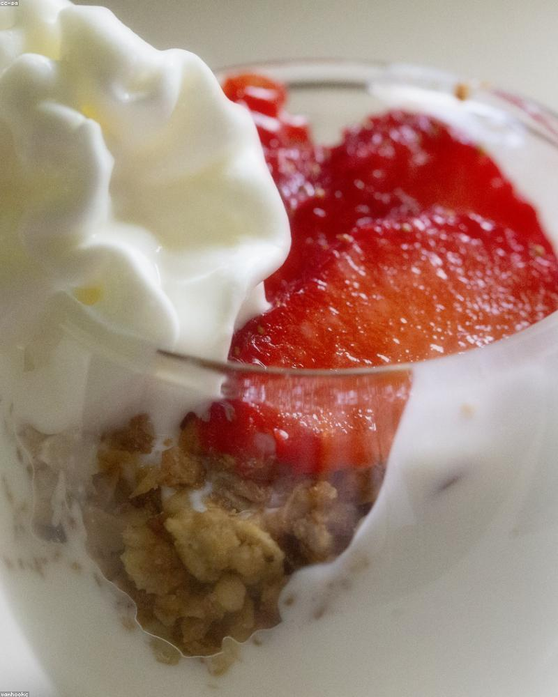
Z6 · GUSTARE
IAURT GRECESC
CU PUDRĂ PROTEICĂ
Intelligent FuelingGustare⏱ 2 min
Calorii340
Proteine45G
Carbohidrați18G
Grăsimi9G
Ingrediente
Iaurt grecesc 2%250 g
Pudră proteică20 g
Execuție
01Amestecă pudra în iaurt. Densă, cremoasă, ~45 g proteină.
02Gustarea perfectă pentru o zi ușoară: multă proteină, puține calorii.
PONTÎn zi ușoară, gustările proteice-slabe (iaurt, ton) sunt prietenul tău. Saturat fără calorii multe.
PUI LA CUPTOR
CU SALATĂ
Intelligent FuelingSeara⏱ 28 min
Calorii560
Proteine60G
Carbohidrați15G
Grăsimi28G
Ingrediente
Piept de pui250 g
Salată mixtă200 g
Ulei de măsline1 lingură
Condimente, lămâiedupă gust
Execuție
01Pui condimentat, la cuptor 25 de minute.
02Salată mare cu ulei și lămâie. Cină ușoară, proteină pură.
PONTÎnchizi ziua ușoară cu proteină și verde. Carbohidrații îi readuci mâine, în ziua de antrenament.
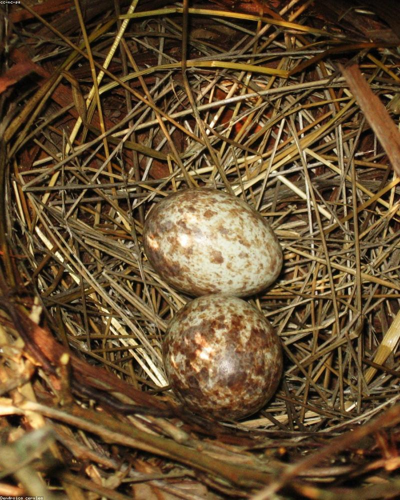
Z7 · MIC DEJUN
OUĂ FIERTE CU
TELEMEA ȘI ROȘII
Intelligent FuelingDimineața⏱ 3 min
Calorii520
Proteine42G
Carbohidrați15G
Grăsimi32G
Ingrediente
Ouă fierte4 buc
Telemea slabă80 g
Roșii150 g
Execuție
01Ouă fierte din timp plus telemea și roșii. Mic dejun de 3 minute.
02Sărat, proteic, fără carbohidrați. Potrivit unei zile fără efort.
PONTÎn zilele ușoare, micul dejun fără pâine te ține sătul cu mai puține calorii. Proteina e cea care satură.
SOMON CU LEGUME
LA ABUR
Unbreakable CapacityPrânz⏱ 20 min
Calorii720
Proteine62G
Carbohidrați45G
Grăsimi34G
Ingrediente
File de somon250 g
Legume la abur300 g
Cartof mic (opțional)120 g
Lămâie, saredupă gust
Execuție
01Somon la tigaie sau cuptor cu lămâie, legume multe la abur.
02În zi ușoară mergi pe volum mare de legume și un cartof mic, nu porție mare de orez.
PONTSomonul îți dă grăsimi bune care te țin sătul. Perfect într-o zi cu mai puțini carbohidrați.
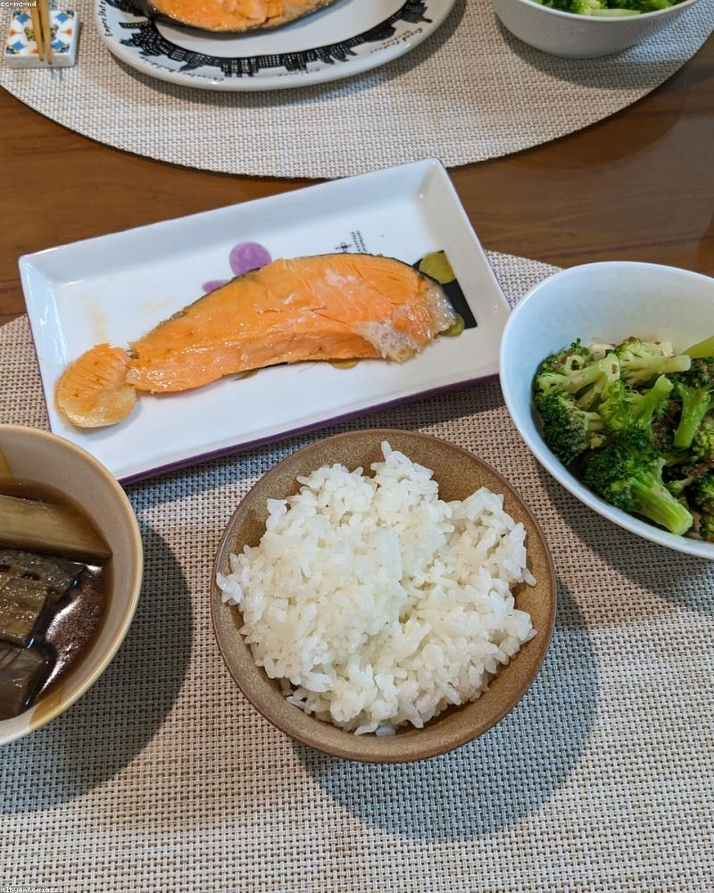
Z7 · GUSTARE
TON CU
COTTAGE
Intelligent FuelingGustare⏱ 2 min
Calorii300
Proteine42G
Carbohidrați8G
Grăsimi9G
Ingrediente
Ton în suc propriu130 g net
Brânză cottage100 g
Castravete, roșii100 g
Execuție
01Amestecă tonul scurs cu cottage și legumele.
02Gustare slabă și densă proteic, ideală în zi ușoară.
PONTȚine 2-3 conserve de ton în dulap. Plasa ta de siguranță proteică când nu ai gătit.
MUȘCHI DE PORC
CU LEGUME
Base StrengthSeara⏱ 30 min
Calorii560
Proteine52G
Carbohidrați18G
Grăsimi28G
Ingrediente
Mușchi de porc230 g
Legume la cuptor250 g
Usturoi, condimentedupă gust
Execuție
01Mușchi condimentat, la cuptor cu legumele, 30 de minute.
02Închei săptămâna cu o cină slabă și sățioasă. Așa arată sistemul tău acum.
PONTAsta nu e o săptămână de dietă. E felul în care mănânci de acum: proteină mare, carbohidrați ajustați pe efort.